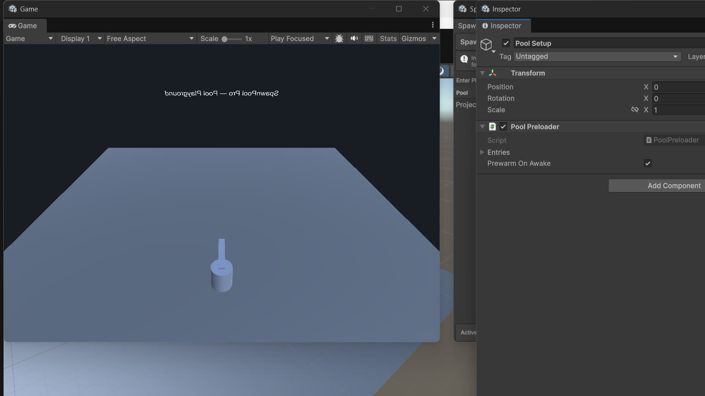

SpawnPool Pro · ByteLura
Core Concepts: Pools, Prewarm, Despawn Scheduling
One pool per prefab
PoolManager keeps one GameObjectPool per prefab, keyed internally without string keys. The first time you spawn or prewarm a prefab, its pool is created. From then on, every spawn of that prefab is served by that pool.
If you want explicit control instead of the static facade, own a GameObjectPool directly: construct it with the prefab, an initial capacity, a growth cap, and the exceed-cap flag, and call its Spawn, Despawn, Prewarm, and Clear methods.
Typed pools for plain C# objects
Pool<T> pools class instances that are not GameObjects. You construct it with:
- a factory that creates one instance,
- an optional reset action, run when an instance is released,
- an initial capacity,
- a growth cap, and
- the allow-exceed-cap flag (off by default).
Get takes an instance, Release returns it, Prewarm creates instances ahead of time, and Clear empties the pool. The same stats model backs both pool kinds.
Prewarm
Prewarm creates inactive instances ahead of time and allocates the pool's internal storage once. After prewarm, spawns are served from stock instead of creating at runtime.

Three ways to prewarm:
PoolManager.Prewarm(prefab, count)from code.Pool<T>.Prewarm(count)/GameObjectPool.Prewarm(count)on a pool you own.- The
PoolPreloadercomponent in a scene (see below) — no code at all.
How much to prewarm is not a guess for long: the dashboard's Peak counter tells you the most instances a pool ever had active at once. Set prewarm near Peak once you have played the scene once. See Dashboard & Analytics.
Growth caps — a pool never silently exceeds its cap
A cap is set when a pool is first created:
PoolManager.GetOrCreatePool(prefab, maxCapacity, allowExceedCap)— call it before the first spawn of that prefab,- on the
PoolPreloaderentry for that prefab, or - in the
Pool<T>/GameObjectPoolconstructor.
At the cap, the default behaviour is fail-safe refusal:
Spawnreturns null;TrySpawnreturns false.- The refusal is counted in
CapHits. - A warning is logged once per pool per play session.
If you would rather grow than refuse, set the per-pool Allow Exceed Cap flag. Growth past the cap is then allowed, and every such creation is counted in OverflowCreates, so the choice stays visible in the numbers.
Spawn and despawn — the lifecycle order
The order is fixed, documented, and safe to rely on in gameplay code.
Despawn always, in this order:
- fires
OnDespawned(the instance is still active — tidy up there), - deactivates the instance,
- parents it to the pool root,
- makes it available for reuse.
Spawn always, in this order:
- takes the longest-inactive instance first (first-in, first-out),
- sets parent, position, and rotation,
- activates the instance,
- fires
OnSpawned(reset state there).
Callbacks are collected from the instance and its children once, at creation — there is no per-spawn search.
Despawn scheduling — delayed despawn
Despawn(instance, delaySeconds) schedules the return through the single hidden driver object. The instance stays active until the driver's clock passes the deadline, then it despawns exactly once.
If you despawn the instance manually before the deadline, the scheduled despawn is cancelled — no double return, no warning.
The driver object:
- is created automatically on first use by
PoolSceneBootstrap.EnsureDriver()— you never place it by hand, - is named "SpawnPool Pro Driver" and hidden in the hierarchy,
- ticks delayed despawns and the checkout clock on unscaled time, and
- is destroyed by
PoolManager.ClearAll()and on application quit.
Repeated EnsureDriver calls never create a second driver.
Misuse is detected, counted, and safe
- Double return: returning the same instance twice. The second return is ignored, the pool is never corrupted (the instance is never handed out twice at once), and the event is counted in Warnings.
- Foreign return: despawning an instance no pool created. On the GameObject path the instance is destroyed and the event is counted as a foreign-return warning — documented behaviour, never a leak. On the typed path the instance is simply not added to the pool.
- Already-inactive return: detected and counted the same way.
Warnings are surfaced in the dashboard and logged once per pool. They are never thrown as exceptions into your game loop — but they always mean a bug in calling code worth fixing.
Scene bootstrap — the PoolPreloader
Add PoolPreloader to any scene object and list entries of (prefab, prewarm count, max capacity, allow exceed cap). With Prewarm On Awake enabled (the default) it prewarms each entry into PoolManager on Awake. You can also call PrewarmNow() yourself; repeated calls only top the pools up.
A scene containing only a PoolPreloader needs zero buyer code to have its pools ready on play.
Clearing everything
PoolManager.ClearAll() destroys every pooled instance and the pool root, empties the registry, and destroys the driver. Spawning after ClearAll rebuilds pools fresh, with no stale references. Each pool also has its own Clear().